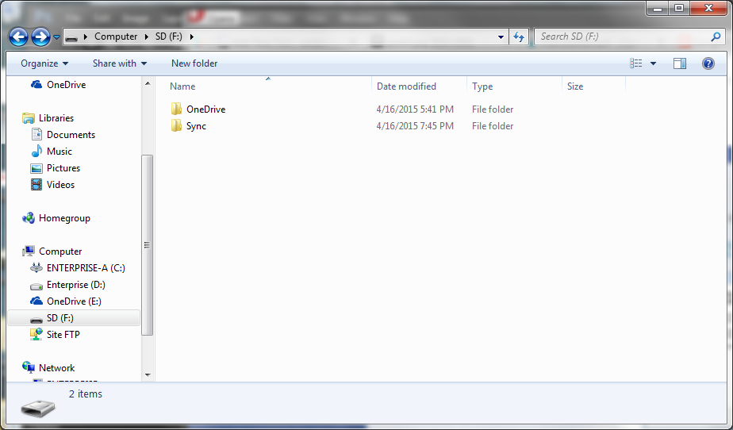
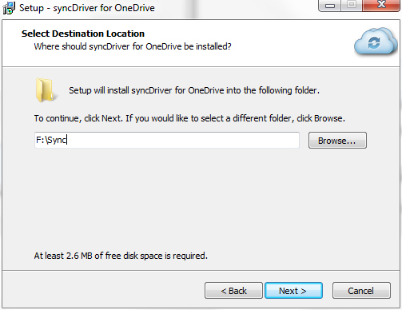
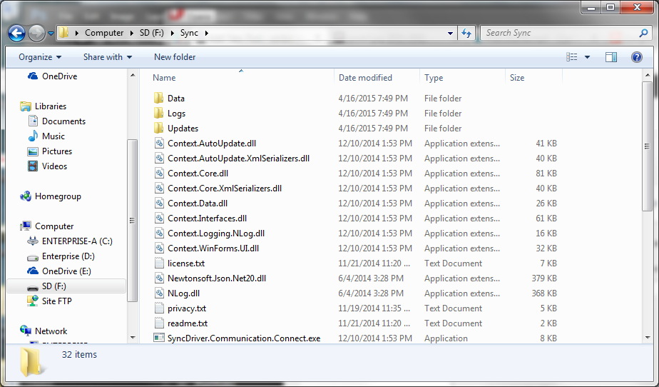
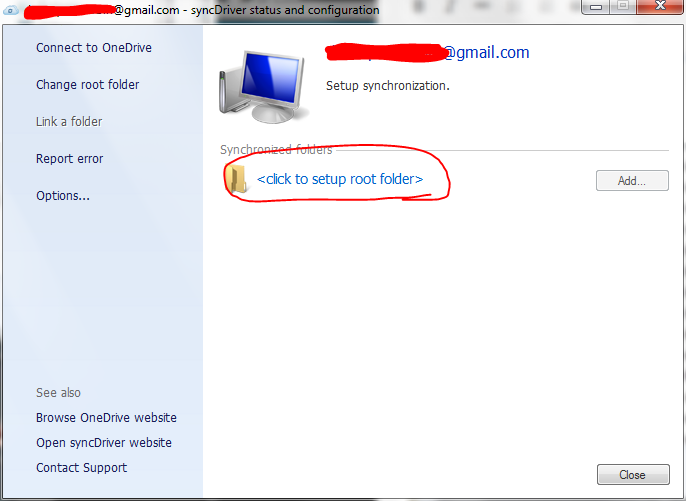
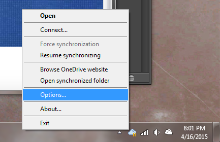
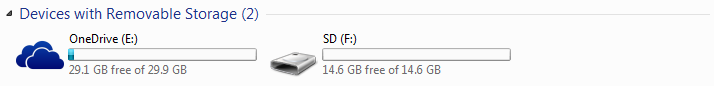

I’ve wanted cloud storage services like OneDrive or Dropbox to make flash drives that sync with their services for a while, and there doesn’t seem to be anything like it on the market. This would be immensely useful on shared/public computers, for when you need to access files without using the often less-useful web app or installing the normal sync app.
My goal was to make a flash drive that fully synced with OneDrive, that could be used on public (specifically school computers). This should work for any Windows XP SP2+ computer, as long as whatever restrictions are in place allow running programs from a flash drive (some organizations only allow pre-installed software to be run, for instance). So here’s how I did it.
First, create folders on your flash drive called ‘OneDrive’ and ‘Sync’. The first will serve as the folder where your OneDrive files are kept, and the second where the program that syncs your files will be installed to. It should look something like this:

No go download syncDriver from their website. Run the installer, but make sure to select ‘Only for me’ and not ‘Anyone who uses this computer’ when asked for installation options. When asked where to install it, set it to the Sync folder you made on your flash drive. It should look like this:

Click Yes if an alert pops up that the folder already exists, and the rest of the installation shouldn’t take long. When it’s done, close the installer. If you open the Sync folder, there should be all the files inside:

Yep, there’s definitely files in there. Now open the program called ‘SyncDriver.TrayIcon.exe’ in that folder – this is the program that will sync your OneDrive files. It will ask you for your OneDrive account information, so type it in and press OK. For some reason, it didn’t let me login with my Outlook.com email – but the Gmail I used to make the account worked. This window should appear:

Click the link that’s circled to pick the folder you will sync. This is where you will pick the OneDrive folder on your flash drive – but don’t use the Browse button. Every time you plug your flash drive into Windows, it gives it a random drive letter. So if you picked ‘F:\OneDrive’, it might not work on another computer because the flash drive mounted as letter E: instead.
To avoid this, type “..\OneDrive” (without the quotes). This is just another way of referencing the OneDrive folder, but it doesn’t use drive letters – meaning it will work on any drive letter a Windows computer gives it. Click OK, look over the sync settings if you want to change something (like picking only certain folders to sync if your flash drive is low on space), and press OK again.
With any luck, it should begin to sync all your files to the OneDrive folder – you can open the folder to check. Just like Microsoft’s OneDrive client, syncDriver adds an icon to the taskbar that you can right-click for information:

Once your files are done syncing, you’re ready to go! Just remember that after you plug in your flash drive to open the ‘SyncDriver.TrayIcon.exe’ program to run the sync in the process. Unfortunately you can’t make a shortcut to the program on the main directory (or another folder) on your flash drive – shortcuts use drive letters.
If you use your flash drive exclusively for OneDrive sync, you can make it look a little more ‘official’ by applying an autorun file and custom icon. First, download this OneDrive icon file and put it in the Sync folder on your flash drive. Second, download this autorun text file and save it on the root of your flash drive (not in any folder).
This will give your flash drive the name ‘OneDrive’ and the OneDrive icon as the drive icon. Before Microsoft disabled it, you could run a program when you inserted a CD or flash drive – perfect for this use. That’s no longer the case, but you still get a nice looking icon.
If you want, you can hide the autorun.inf file by right-clicking it, clicking on Properties, and checking the box next to ‘Hidden’ near the bottom of the properties window. Now eject the drive and plug it back in to see the changes:

So that’s about it – you now have a fully functioning flash drive that syncs with the cloud. As a bonus, you can install programs on the flash drive to open the files in your OneDrive. For example, if you have Office documents but you aren’t sure if the computer you’re using will have Microsoft Office, download LibreOffice Portable and install it to your flash drive.
Enjoy!
{kind=link}